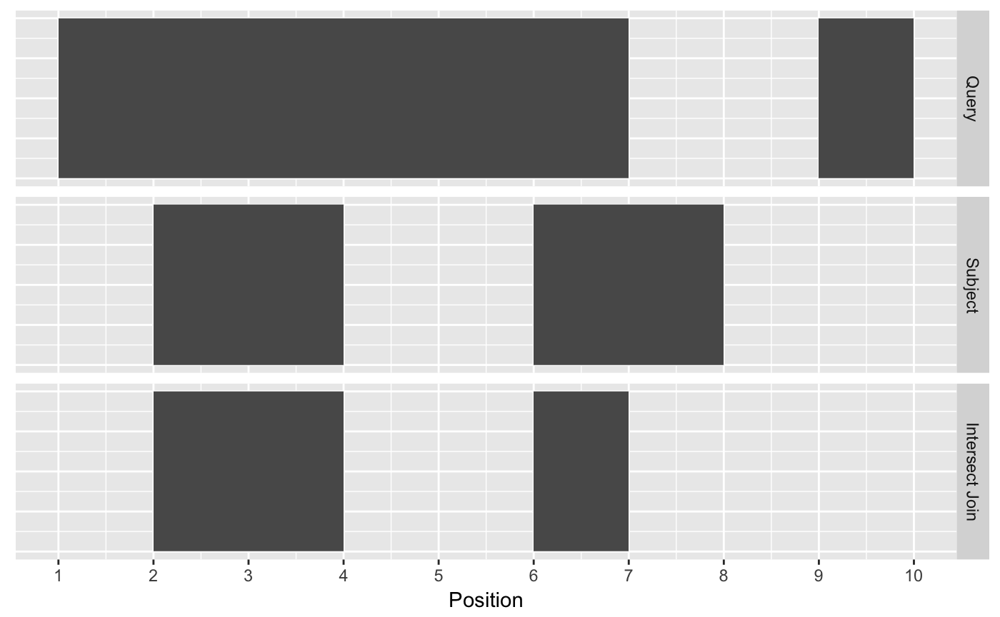

Getting started with the plyranges package
Stuart Lee
2018-03-11
Ranges revisted
In Bioconductor there are two classes, IRanges and GRanges, that are standard data structures for representing genomics data. Throughout this document I refer to either of these classes as Ranges if an operation can be performed on either class, otherwise I explicilty mention if a function is approrpriate for an IRanges or GRanges.
Ranges objects can either represent sets of integers as IRanges (which have start, end and width attributes) or represent genomic intervals (which have additional attributes, sequence name, and strand) as GRanges. In addition, both types of Ranges can store information about their intervals as metadata columns (for example GC content over a genomic interval).
Ranges objects follow the tidy data principle: each row of a Ranges object corresponds to an interval, while each column will represent a variable about that interval, and generally each object will represent a single unit of observation (like gene annotations).
Consequently, Ranges objects provide a powerful representation for reasoning about genomic data. In this vignette, you will learn more about Ranges objects and how via grouping, restriction and summarisation you can perform common data tasks.
Constructing Ranges
To construct an IRanges we require that there are at least two columns that represent at either a starting coordinate, finishing coordinate or the width of the interval.
suppressPackageStartupMessages(library(plyranges))
set.seed(100)
df <- data.frame(start=c(2:-1, 13:15),
width=c(0:3, 2:0))
# produces IRanges
rng <- df %>% as_iranges()
rng## IRanges object with 7 ranges and 0 metadata columns:
## start end width
## <integer> <integer> <integer>
## [1] 2 1 0
## [2] 1 1 1
## [3] 0 1 2
## [4] -1 1 3
## [5] 13 14 2
## [6] 14 14 1
## [7] 15 14 0To construct a GRanges we require a column that represents that sequence name ( contig or chromosome id), and an optional column to represent the strandedness of an interval.
# seqname is required for GRanges, metadata is automatically kept
grng <- df %>%
transform(seqnames = sample(c("chr1", "chr2"), 7, replace = TRUE),
strand = sample(c("+", "-"), 7, replace = TRUE),
gc = runif(7)) %>%
as_granges()
grng## GRanges object with 7 ranges and 1 metadata column:
## seqnames ranges strand | gc
## <Rle> <IRanges> <Rle> | <numeric>
## [1] chr1 [ 2, 1] + | 0.76255108229816
## [2] chr1 [ 1, 1] - | 0.669021712383255
## [3] chr2 [ 0, 1] + | 0.204612161964178
## [4] chr1 [-1, 1] - | 0.357524853432551
## [5] chr1 [13, 14] - | 0.359475114848465
## [6] chr1 [14, 14] + | 0.690290528349578
## [7] chr2 [15, 14] + | 0.535811153938994
## -------
## seqinfo: 2 sequences from an unspecified genome; no seqlengthsArithmetic on Ranges
Sometimes you want to modify a genomic interval by altering the width of the interval while leaving the start, end or midpoint of the coordinates unaltered. This is achieved with the set_width verb along with anchor_* adverbs.
The act of anchoring fixes either the start, end, center coordinates of the Range object, as shown in the figure and code below and anchors are used in combination with either set_width or stretch.

rng <- as_iranges(data.frame(start=c(1, 2, 3), end=c(5, 2, 8)))
grng <- as_granges(data.frame(start=c(1, 2, 3), end=c(5, 2, 8),
seqnames = "seq1",
strand = c("+", "*", "-")))
set_width(rng, 10)## IRanges object with 3 ranges and 0 metadata columns:
## start end width
## <integer> <integer> <integer>
## [1] 1 10 10
## [2] 2 11 10
## [3] 3 12 10## IRanges object with 3 ranges and 0 metadata columns:
## start end width
## <integer> <integer> <integer>
## [1] 1 10 10
## [2] 2 11 10
## [3] 3 12 10## IRanges object with 3 ranges and 0 metadata columns:
## start end width
## <integer> <integer> <integer>
## [1] -4 5 10
## [2] -7 2 10
## [3] -1 8 10## IRanges object with 3 ranges and 0 metadata columns:
## start end width
## <integer> <integer> <integer>
## [1] -2 7 10
## [2] -3 6 10
## [3] 1 10 10## GRanges object with 3 ranges and 0 metadata columns:
## seqnames ranges strand
## <Rle> <IRanges> <Rle>
## [1] seq1 [-4, 5] +
## [2] seq1 [-7, 2] *
## [3] seq1 [ 3, 12] -
## -------
## seqinfo: 1 sequence from an unspecified genome; no seqlengths## GRanges object with 3 ranges and 0 metadata columns:
## seqnames ranges strand
## <Rle> <IRanges> <Rle>
## [1] seq1 [ 1, 10] +
## [2] seq1 [ 2, 11] *
## [3] seq1 [-1, 8] -
## -------
## seqinfo: 1 sequence from an unspecified genome; no seqlengthsSimilarly, you can modify the width of an interval using the stretch verb. Without anchoring, this function will extend the interval in either direction by an integer amount. With anchoring, either the start, end or midpoint are preserved.
## IRanges object with 3 ranges and 0 metadata columns:
## start end width
## <integer> <integer> <integer>
## [1] -7 13 21
## [2] -8 12 21
## [3] -5 15 21## IRanges object with 3 ranges and 0 metadata columns:
## start end width
## <integer> <integer> <integer>
## [1] -17 13 31
## [2] -18 12 31
## [3] -15 15 31## IRanges object with 3 ranges and 0 metadata columns:
## start end width
## <integer> <integer> <integer>
## [1] -7 23 31
## [2] -8 22 31
## [3] -5 25 31## GRanges object with 3 ranges and 0 metadata columns:
## Anchored by: 3p
## seqnames ranges strand
## <Rle> <IRanges> <Rle>
## [1] seq1 [-9, 15] +
## [2] seq1 [-8, 12] *
## [3] seq1 [-7, 18] -
## -------
## seqinfo: 1 sequence from an unspecified genome; no seqlengths## GRanges object with 3 ranges and 0 metadata columns:
## Anchored by: 5p
## seqnames ranges strand
## <Rle> <IRanges> <Rle>
## [1] seq1 [-9, 15] +
## [2] seq1 [-8, 12] *
## [3] seq1 [-7, 18] -
## -------
## seqinfo: 1 sequence from an unspecified genome; no seqlengthsRanges can be shifted left or right. If strand information is available we can also shift upstream or downstream.
## IRanges object with 3 ranges and 0 metadata columns:
## start end width
## <integer> <integer> <integer>
## [1] -9 -5 5
## [2] -8 -8 1
## [3] -7 -2 6## IRanges object with 3 ranges and 0 metadata columns:
## start end width
## <integer> <integer> <integer>
## [1] 11 15 5
## [2] 12 12 1
## [3] 13 18 6## GRanges object with 3 ranges and 0 metadata columns:
## seqnames ranges strand
## <Rle> <IRanges> <Rle>
## [1] seq1 [-9, -5] +
## [2] seq1 [ 2, 2] *
## [3] seq1 [13, 18] -
## -------
## seqinfo: 1 sequence from an unspecified genome; no seqlengths## GRanges object with 3 ranges and 0 metadata columns:
## seqnames ranges strand
## <Rle> <IRanges> <Rle>
## [1] seq1 [11, 15] +
## [2] seq1 [ 2, 2] *
## [3] seq1 [-7, -2] -
## -------
## seqinfo: 1 sequence from an unspecified genome; no seqlengthsGrouping Ranges
plyranges introduces a new class of Ranges called RangesGrouped, this is a similiar idea to the grouped data.frame\tibble in dplyr.
Grouping can act on either the core components or the metadata columns of a Ranges object.
It is most effective when combined with other verbs such as mutate(), summarise(), filter(), reduce_ranges() or disjoin_ranges().
grng <- data.frame(seqnames = sample(c("chr1", "chr2"), 7, replace = TRUE),
strand = sample(c("+", "-"), 7, replace = TRUE),
gc = runif(7),
start = 1:7,
width = 10) %>%
as_granges()
grng_by_strand <- grng %>%
group_by(strand)
grng_by_strand## GRanges object with 7 ranges and 1 metadata column:
## Groups: strand
## seqnames ranges strand | gc
## <Rle> <IRanges> <Rle> | <numeric>
## [1] chr2 [1, 10] - | 0.889453538926318
## [2] chr2 [2, 11] + | 0.180407245177776
## [3] chr2 [3, 12] + | 0.629390850430354
## [4] chr1 [4, 13] - | 0.989564136601985
## [5] chr1 [5, 14] + | 0.130288870073855
## [6] chr2 [6, 15] - | 0.330660525709391
## [7] chr2 [7, 16] - | 0.865120546659455
## -------
## seqinfo: 2 sequences from an unspecified genome; no seqlengthsRestricting Ranges
The verb filter can be used to restrict rows in the Ranges. Note that grouping will cause the filter to act within each group of the data.
## GRanges object with 2 ranges and 1 metadata column:
## seqnames ranges strand | gc
## <Rle> <IRanges> <Rle> | <numeric>
## [1] chr2 [2, 11] + | 0.180407245177776
## [2] chr1 [5, 14] + | 0.130288870073855
## -------
## seqinfo: 2 sequences from an unspecified genome; no seqlengths## GRanges object with 2 ranges and 1 metadata column:
## Groups: strand
## seqnames ranges strand | gc
## <Rle> <IRanges> <Rle> | <numeric>
## [1] chr2 [3, 12] + | 0.629390850430354
## [2] chr1 [4, 13] - | 0.989564136601985
## -------
## seqinfo: 2 sequences from an unspecified genome; no seqlengthsWe also provide the convience methods filter_by_overlaps and filter_by_non_overlaps for restricting by any overlapping Ranges.
ir0 <- data.frame(start = c(5,10, 15,20), width = 5) %>%
as_iranges()
ir1 <- data.frame(start = 2:6, width = 3:7) %>%
as_iranges()
ir0## IRanges object with 4 ranges and 0 metadata columns:
## start end width
## <integer> <integer> <integer>
## [1] 5 9 5
## [2] 10 14 5
## [3] 15 19 5
## [4] 20 24 5## IRanges object with 5 ranges and 0 metadata columns:
## start end width
## <integer> <integer> <integer>
## [1] 2 4 3
## [2] 3 6 4
## [3] 4 8 5
## [4] 5 10 6
## [5] 6 12 7## IRanges object with 2 ranges and 0 metadata columns:
## start end width
## <integer> <integer> <integer>
## [1] 5 9 5
## [2] 10 14 5## IRanges object with 2 ranges and 0 metadata columns:
## start end width
## <integer> <integer> <integer>
## [1] 15 19 5
## [2] 20 24 5Summarising Ranges
The summarise function will return a tibble because the information required to return a Ranges object is lost. It is often most useful to use summarise in combination with the group_by family of functions.
ir1 <- ir1 %>%
mutate(gc = runif(length(.)))
ir0 %>%
group_by_overlaps(ir1) %>%
summarise(gc = mean(gc))## DataFrame with 2 rows and 2 columns
## query gc
## <integer> <numeric>
## 1 1 0.6755545
## 2 2 0.6357952Joins, or another way at looking at overlaps between Ranges
We can think about finding overlaps as a type of join between two Ranges where we are using the intervals as keys. Of most use are the join_overlap_intersect, join_overlap_inner and join_overlap_left functions.
To begin we’ll define a query and subject GRanges object.
query <- data.frame(seqnames = "chr1",
strand = c("+", "-"),
start = c(1, 9),
end = c(7, 10),
key.a = letters[1:2]) %>%
as_granges()
subject <- data.frame(seqnames = "chr1",
strand = c("-", "+"),
start = c(2, 6),
end = c(4, 8),
key.b = LETTERS[1:2]) %>%
as_granges()Query and Subject Ranges
The first function, join_overlap_intersect will return a Ranges`` object where the start, end, and width coordinates correspond to the amount of any overlap between the left and right inputRanges`. It also returns any metadata in the subject range if the subject overlaps the query. Note that by default the join functions ignore strandedness.
## GRanges object with 2 ranges and 2 metadata columns:
## seqnames ranges strand | key.a key.b
## <Rle> <IRanges> <Rle> | <factor> <factor>
## [1] chr1 [2, 4] + | a A
## [2] chr1 [6, 7] + | a B
## -------
## seqinfo: 1 sequence from an unspecified genome; no seqlengthsintersect_df <- as.data.frame(intersect_rng)[, -c(6,7)]
intersect_df$key <- "Intersect Join"
melted_ranges <- rbind(query_df, subject_df, intersect_df)
melted_ranges$key <- factor(melted_ranges$key,
levels = c("Query", "Subject", "Intersect Join"))
ggplot(melted_ranges, aes(xmin = start, xmax = end, ymin = 1, ymax = 3)) +
geom_rect() +
facet_grid(key ~ .) +
scale_x_continuous(breaks = seq(1, 10, by = 1)) +
xlab("Position") +
theme(axis.text.y = element_blank(),
axis.ticks.y = element_blank(),
axis.title.y = element_blank())
The join_overlap_inner function will return the Ranges in the query that overlap any Ranges in the subject. Like the join_overlap_intersect function metadata of the subject Range is returned if it overlaps the query.
## GRanges object with 2 ranges and 2 metadata columns:
## seqnames ranges strand | key.a key.b
## <Rle> <IRanges> <Rle> | <factor> <factor>
## [1] chr1 [1, 7] + | a A
## [2] chr1 [1, 7] + | a B
## -------
## seqinfo: 1 sequence from an unspecified genome; no seqlengthsInner Join
We also provide a convienence method called find_overlaps that computes the same result as join_overlap_inner.
## GRanges object with 2 ranges and 2 metadata columns:
## seqnames ranges strand | key.a key.b
## <Rle> <IRanges> <Rle> | <factor> <factor>
## [1] chr1 [1, 7] + | a A
## [2] chr1 [1, 7] + | a B
## -------
## seqinfo: 1 sequence from an unspecified genome; no seqlengthsThe join_overlap_left method will perform an outer left join.
First any overlaps that are found will be returned similar to join_overlap_inner. Then any non-overlapping ranges will be returned, with missing values on the metadata columns.
## GRanges object with 3 ranges and 2 metadata columns:
## seqnames ranges strand | key.a key.b
## <Rle> <IRanges> <Rle> | <factor> <factor>
## [1] chr1 [1, 7] + | a A
## [2] chr1 [1, 7] + | a B
## [3] chr1 [9, 10] - | b <NA>
## -------
## seqinfo: 2 sequences from an unspecified genome; no seqlengthsInner Join
Compared with filter_by_overlaps above, the overlap left join expands the Ranges to give information about each interval on the query Ranges that overlap those on the subject Ranges as well as the intervals on the left that do not overlap any range on the right.
Example: dealing with multimapping
This example is taken from the Bioconductor support site.
We have two Ranges objects. The first contains single nucleotide positions corresponding to an intensity measurement such as a ChiP-seq experiment, while the other contains coordinates for two genes of interest.
We want to identify which positions in the intensties Ranges overlap the genes, where each row corresponds to a position that overlaps a single gene.
First we create the two Ranges objects
intensities <- data.frame(seqnames = "VI",
start = c(3320:3321,3330:3331,3341:3342),
width = 1) %>%
as_granges()
intensities ## GRanges object with 6 ranges and 0 metadata columns:
## seqnames ranges strand
## <Rle> <IRanges> <Rle>
## [1] VI [3320, 3320] *
## [2] VI [3321, 3321] *
## [3] VI [3330, 3330] *
## [4] VI [3331, 3331] *
## [5] VI [3341, 3341] *
## [6] VI [3342, 3342] *
## -------
## seqinfo: 1 sequence from an unspecified genome; no seqlengthsgenes <- data.frame(seqnames = "VI",
start = c(3322, 3030),
end = c(3846, 3338),
gene_id=c("YFL064C", "YFL065C")) %>%
as_granges()
genes## GRanges object with 2 ranges and 1 metadata column:
## seqnames ranges strand | gene_id
## <Rle> <IRanges> <Rle> | <factor>
## [1] VI [3322, 3846] * | YFL064C
## [2] VI [3030, 3338] * | YFL065C
## -------
## seqinfo: 1 sequence from an unspecified genome; no seqlengthsNow to find where the positions overlap each gene, we can perform an overlap join. This will automatically carry over the gene_id information as well as their coordinates (we can drop those by only selecting the gene_id).
## GRanges object with 8 ranges and 1 metadata column:
## seqnames ranges strand | gene_id
## <Rle> <IRanges> <Rle> | <factor>
## [1] VI [3320, 3320] * | YFL065C
## [2] VI [3321, 3321] * | YFL065C
## [3] VI [3330, 3330] * | YFL065C
## [4] VI [3330, 3330] * | YFL064C
## [5] VI [3331, 3331] * | YFL065C
## [6] VI [3331, 3331] * | YFL064C
## [7] VI [3341, 3341] * | YFL064C
## [8] VI [3342, 3342] * | YFL064C
## -------
## seqinfo: 1 sequence from an unspecified genome; no seqlengthsSeveral positions match to both genes. We can count them using summarise and grouping by the start position:
## DataFrame with 6 rows and 2 columns
## start n
## <integer> <integer>
## 1 3320 1
## 2 3321 1
## 3 3330 2
## 4 3331 2
## 5 3341 1
## 6 3342 1Finding your neighbours
We also provide methods for finding nearest, preceding or following Ranges.
These methods are similar to the overlap joins described above.
## IRanges object with 4 ranges and 1 metadata column:
## start end width | gc
## <integer> <integer> <integer> | <numeric>
## [1] 5 9 5 | 0.780358511023223
## [2] 10 14 5 | 0.780358511023223
## [3] 15 19 5 | 0.780358511023223
## [4] 20 24 5 | 0.780358511023223## IRanges object with 4 ranges and 1 metadata column:
## start end width | gc
## <integer> <integer> <integer> | <numeric>
## [1] 5 9 5 | 0.777584439376369
## [2] 10 14 5 | 0.603324356488883
## [3] 15 19 5 | 0.780358511023223
## [4] 20 24 5 | 0.780358511023223## IRanges object with 0 ranges and 1 metadata column:
## start end width | gc
## <integer> <integer> <integer> | <numeric>## IRanges object with 5 ranges and 1 metadata column:
## start end width | gc
## <integer> <integer> <integer> | <numeric>
## [1] 2 4 3 | 0.777584439376369
## [2] 3 6 4 | 0.827303449623287
## [3] 4 8 5 | 0.603324356488883
## [4] 5 10 6 | 0.491231821943074
## [5] 6 12 7 | 0.780358511023223For GRanges objects by default strand is not considered when performing overlap joins. To include strand when finding overlaps use append the prefix directed. To restrict overlapping Ranges to those within the query range use the prefix within.
Grouping by overlaps
It’s also possible to group by overlaps. Using this approach we can count the number of overlaps that are greater than 0.
## IRanges object with 6 ranges and 2 metadata columns:
## Groups: query
## start end width | gc query
## <integer> <integer> <integer> | <numeric> <integer>
## [1] 5 9 5 | 0.827303449623287 1
## [2] 5 9 5 | 0.603324356488883 1
## [3] 5 9 5 | 0.491231821943074 1
## [4] 5 9 5 | 0.780358511023223 1
## [5] 10 14 5 | 0.491231821943074 2
## [6] 10 14 5 | 0.780358511023223 2## IRanges object with 6 ranges and 3 metadata columns:
## Groups: query
## start end width | gc query
## <integer> <integer> <integer> | <numeric> <integer>
## [1] 5 9 5 | 0.827303449623287 1
## [2] 5 9 5 | 0.603324356488883 1
## [3] 5 9 5 | 0.491231821943074 1
## [4] 5 9 5 | 0.780358511023223 1
## [5] 10 14 5 | 0.491231821943074 2
## [6] 10 14 5 | 0.780358511023223 2
## n_overlaps
## <integer>
## [1] 4
## [2] 4
## [3] 4
## [4] 4
## [5] 2
## [6] 2Of course we can also add overlap counts via the count_overlaps function.
## IRanges object with 4 ranges and 1 metadata column:
## start end width | n_overlaps
## <integer> <integer> <integer> | <integer>
## [1] 5 9 5 | 4
## [2] 10 14 5 | 2
## [3] 15 19 5 | 0
## [4] 20 24 5 | 0Data Import/Output
We provide convienence functions via rtracklayer and GenomicAlignments for reading/writing the following data formats to/from Ranges objects.
plyranges functions |
File Format |
|---|---|
read_bam() |
BAM |
read_bed()/write_bed()
|
BED |
read_bedgraph()/ write_bedgraph()
|
BEDGraph |
read_narrowpeaks()/ write_narrowpeaks()
|
narrowPeaks |
read_gff() / write_gff()
|
GFF(1-3) / GTF |
read_bw() / write_bw()
|
BigWig |
read_wig() / write_wig()
|
Wig |
Mapping to GenomicRanges/IRanges
For users already familiar with the IRanges and GenomicRanges we provide mappings to the plyranges API.
Operations on range width
For GRanges`` objects all functions ignore any strandedness, unless the strand of the range is anchored.
plyranges functions |
Description |
GenomicRanges/IRanges command |
|---|---|---|
anchor_(start/end/center/3p/5p) |
Fix the start/end/center/ coordinates or positive/negative strand of range. Can be used in combination with any of the following |
Available in functions that have a fix argument. |
set_width(x, width) |
Modify the width of a Ranges
|
resize |
stretch(x, extend) |
Extend the start and end coordinates in opposite directions by a fixed amount. |
start(x)<- start(x) + extend%/%2, end(x) <- end(x) -extend%/%2
|
Operations on range width (invariant)
plyranges functions |
Description |
GenomicRanges/IRanges command |
|---|---|---|
shift_[left/right/downstream/upstream](x, shift) |
Shift the coordinates of the interval (left/right/downstream/upstream) by an integer amount. |
shift_right corresponds to shift
|
flank_[left/right/downstream/upstream](x, width) |
Generates flanking regions of size width left/right/downstream/upstream/
|
corresponds to flank
|
Set operations (vector wise)
These are usual set-operations that act on the sets of the Ranges represented in x and y. By default these operations will ignore any strand information. The directed versions of these functions will take into account strand.
plyranges functions |
Description |
GenomicRanges/IRanges command |
|---|---|---|
[intersect/setdiff/union/]_Ranges |
Set operations between two Ranges, ignoring strand. |
intersect/setdiff/union/ with ignore.strand = FALSE
|
[intersect/setdiff/union/]_anchored_Ranges |
As above taking into account strandedness. |
Set operations (element wise)
We provide infix operators and the verbs between and span to the represent element wise range operations. These map to the pintersect/punion/psetdiff/pgap/punion(fill.gap = FALSE) functions.
Restrictions
The verb filter corresponds to subset, while filter_by_[overlaps/non_overlaps] corresponds to subsetByOverlaps.
Aggregation
The summarise verb is most similar to the aggregate methods defined in GenomicRanges/IRanges.
The reduce_ranges/disjoin_ranges correspond to the reduce/disjoin methods. However, the former methods allow additional summarisation.
The compute_coverage(x) method corresponds to [I/G]Ranges(coverage(x)).
Overlaps
For GRanges objects all functions ignore any strandedness, unless the suffix directed is added to the funciton call
plyranges function |
Description |
GenomicRanges/IRanges command |
|---|---|---|
find_overlaps(x, y, maxgap, minoverlap) |
Returns a Ranges object with any range in y that overlaps x. Appends the metadata in y and its genomic intervals to the returning Ranges. |
findOverlaps(x,y, maxgap, minoverlap, type = "any") with expanding x and y by their hits and appending the mcols in y. |
group_by_overlaps(x, y, maxgap, minoverlap) |
Returns a GroupedRanges object grouped by the query hits. | Same as above with an additional column called query which contains the queryHits. |
count_overlaps(x, y, maxgap, minoverlap) |
Returns an integer vector (used with mutate) |
countOverlaps(x, y, maxgap, minoverlap, type = "any") |
join_overlap_self(x, maxgap, minoverlap) |
Returns a Ranges object with any range that overlaps itself. |
findOverlaps(x,x, maxgap, minoverlap, type = "any") |
join_overlap_inner(x, y, maxgap, minoverlap) |
Finds the intersecting Ranges that overlap in x and y. Returns a Ranges object with the metadata from x and y. |
findOverlapsPairs(x,y, maxgap, minoverlap, type = "any") + pintersect. |
*_within |
Adding suffix within will find overlaps |
Makes type = "within"
|
*_includes |
inverse of within functions | - |
join_nearest[_left/right/up/downstream](x,y) |
Finds nearest neighbour Ranges between x and y. |
nearest + reindexing to return a Ranges object. |
join_precede[_left/right/up/downstream](x,y) |
Finds Ranges in x that preced y
|
precedes + reindexing to return a Ranges object. |
join_follow[_left/right/up/downstream](x,y) |
Finds Ranges in x that follow y
|
precedes + reindexing to return a Ranges object. |
Appendix
## R version 3.4.3 (2017-11-30)
## Platform: x86_64-apple-darwin15.6.0 (64-bit)
## Running under: macOS Sierra 10.12.6
##
## Matrix products: default
## BLAS: /Library/Frameworks/R.framework/Versions/3.4/Resources/lib/libRblas.0.dylib
## LAPACK: /Library/Frameworks/R.framework/Versions/3.4/Resources/lib/libRlapack.dylib
##
## locale:
## [1] en_AU.UTF-8/en_AU.UTF-8/en_AU.UTF-8/C/en_AU.UTF-8/en_AU.UTF-8
##
## attached base packages:
## [1] stats4 parallel stats graphics grDevices utils datasets
## [8] methods base
##
## other attached packages:
## [1] ggplot2_2.2.1 plyranges_0.99.4 GenomicRanges_1.30.3
## [4] GenomeInfoDb_1.14.0 IRanges_2.12.0 S4Vectors_0.16.0
## [7] BiocGenerics_0.24.0
##
## loaded via a namespace (and not attached):
## [1] Rcpp_0.12.15 highr_0.6
## [3] plyr_1.8.4 pillar_1.2.1
## [5] compiler_3.4.3 XVector_0.18.0
## [7] bindr_0.1 bitops_1.0-6
## [9] tools_3.4.3 zlibbioc_1.24.0
## [11] digest_0.6.15 gtable_0.2.0
## [13] tibble_1.4.2 evaluate_0.10.1
## [15] lattice_0.20-35 pkgconfig_2.0.1
## [17] rlang_0.2.0.9000 Matrix_1.2-12
## [19] DelayedArray_0.4.1 yaml_2.1.16
## [21] bindrcpp_0.2 GenomeInfoDbData_1.0.0
## [23] rtracklayer_1.38.3 stringr_1.3.0
## [25] dplyr_0.7.4 knitr_1.18
## [27] Biostrings_2.46.0 tidyselect_0.2.4
## [29] rprojroot_1.3-2 grid_3.4.3
## [31] glue_1.2.0 Biobase_2.38.0
## [33] R6_2.2.2 XML_3.98-1.9
## [35] BiocParallel_1.12.0 rmarkdown_1.8
## [37] reshape2_1.4.3 purrr_0.2.4
## [39] tidyr_0.8.0 magrittr_1.5
## [41] scales_0.5.0 backports_1.1.2
## [43] Rsamtools_1.30.0 htmltools_0.3.6
## [45] matrixStats_0.53.0 GenomicAlignments_1.14.1
## [47] assertthat_0.2.0 SummarizedExperiment_1.8.1
## [49] colorspace_1.3-2 labeling_0.3
## [51] stringi_1.1.6 lazyeval_0.2.1
## [53] munsell_0.4.3 RCurl_1.95-4.10